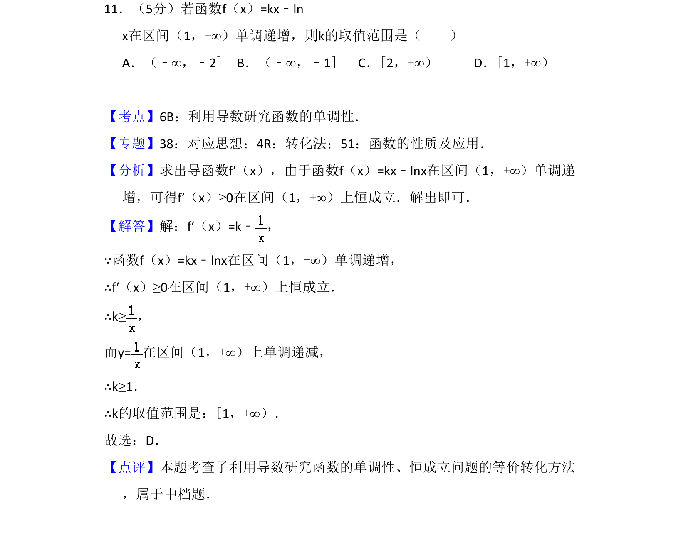
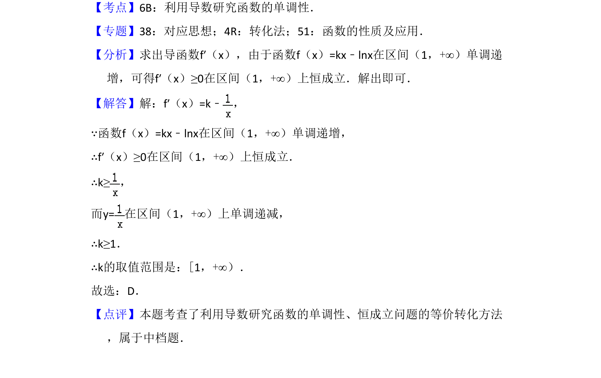

考点：利用导数研究函数的单调性 恒成立问题 参数取值范围

利用导数研究函数在区间单调递增，求参数k的取值范围。

📄 原 PDF 第 8 页：
素材/真题/吉林/2008-2024·（吉林）数学高考真题/2014年高考数学试卷（文）（新课标Ⅱ）（解析卷）.pdf
11．（5分）若函数f（x）=kx﹣ln x在区间（1，+∞）单调递增，则k的取值范围是（ ） A．（﹣∞，﹣2]B．（﹣∞，﹣1]C．[2，+∞）D．[1，+∞）
【考点】6B：利用导数研究函数的单调性．菁优网版权所有 【专题】38：对应思想；4R：转化法；51：函数的性质及应用． 【分析】求出导函数f′（x），由于函数f（x）=kx﹣lnx在区间（1，+∞）单调递 增，可得f′（x）≥0在区间（1，+∞）上恒成立．解出即可． 【解答】解：f′（x）=k﹣ ， ∵函数f（x）=kx﹣lnx在区间（1，+∞）单调递增， ∴f′（x）≥0在区间（1，+∞）上恒成立． ∴k≥， 而y=在区间（1，+∞）上单调递减， ∴k≥1． ∴k的取值范围是：[1，+∞）． 故选：D． 【点评】本题考查了利用导数研究函数的单调性、恒成立问题的等价转化方法 ，属于中档题．